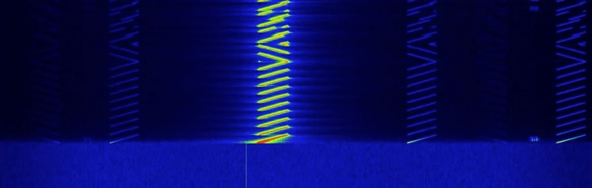
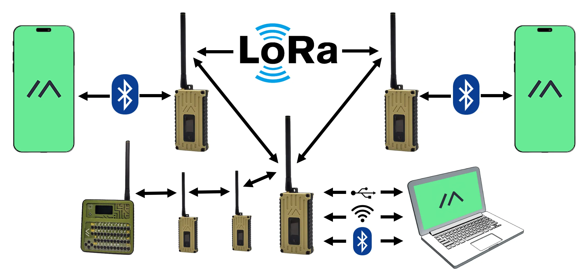

A LoRa network uses long-range, low-power radio communication (LoRa) to send small amounts of data over unlicensed sub-gigahertz bands. LoRa is the physical radio technology, and network setups like Meshtastic and MeshCore add the higher-level protocol and network structure.
A LoRa signal is a chirp spread-spectrum radio transmission: each symbol is represented by a cyclic shifted chirp over the signal bandwidth centered at the base frequency. In real-world visualization with an SDR or RF analyzer, it appears as changing chirp-like frequency sweeps rather than a steady tone.

A LoRa network utilizes long-range, low-power radio communication technology known as LoRa. This technology is designed to transmit small amounts of data over unlicensed sub-gigahertz frequency bands, typically 902-928 MHz, making it suitable for various applications, especially in remote areas.
| Component | Description |
|---|---|
| LoRa | The physical radio technology that enables long-range communication. |
| Meshtastic/MeshCore | A higher-level protocol that manages communication between devices. |
| End Devices | Battery-powered sensors or trackers that send data using LoRa technology. |
| Gateways | Stations that receive data from end devices and connect to the internet. |
LoRa networks are particularly effective for applications such as smart agriculture, environmental monitoring, and asset tracking, where devices need to communicate over long distances with minimal power usage.
LoRa Mesh works by using LoRa technology to create a decentralized network where devices can communicate with each other directly, relaying messages through multiple nodes. This allows for extended coverage and flexibility, as the network can automatically adjust its topology when devices join or leave.

LoRa Mesh utilizes LoRa technology to establish a decentralized communication network. This network allows devices to communicate directly with one another, enhancing coverage and flexibility.
LoRa Mesh networks are particularly useful in scenarios where traditional communication infrastructure is unavailable, such as:
LoRa Mesh effectively combines the advantages of long-range communication with the resilience of a decentralized network, making it a powerful tool for various applications.